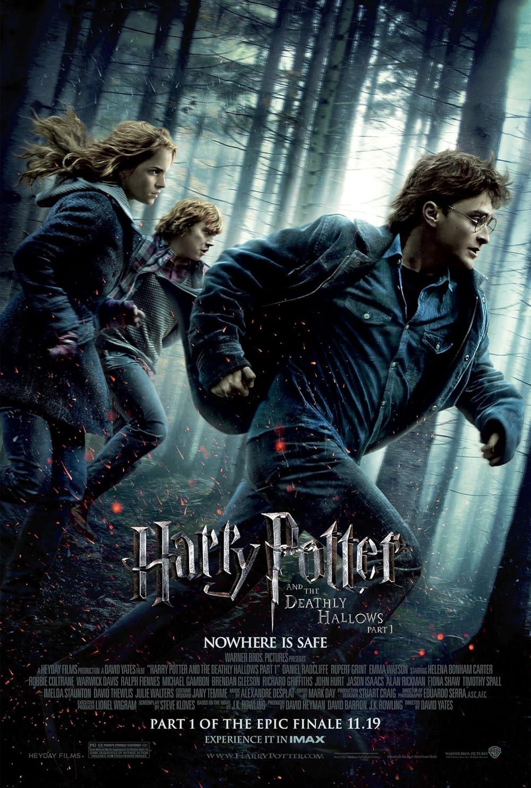
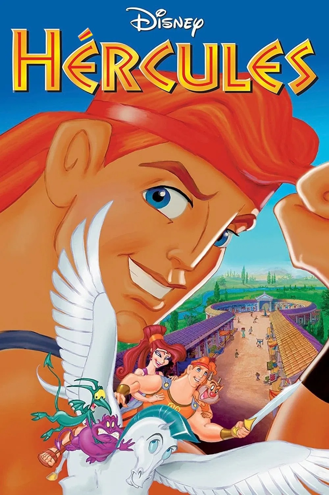

Descripcion:
Me gusta mucho en general la saga completa de harry Potter, en especial de la 3 en adelante ya que fue en esa pelicula cuando el director que la dirigio le dio un toque mas crudo y oscuro a la saga. Pero especificamente me gusta mas la 7 ya que es la que mas me ha impresionado y donde hay mas picos de emocion.

Descripcion:
Escogi esta pelicula ya que es una pelicula que mis papás me ponian mucho de pequeño y aparte de que realmente me gusta le tome un cariño especial. Tambien en parte porque se me hace muy interesante la mitologia griega y a pesar de que la pelicula no plasma al pie de la letra la mitologia griega, emplean una forma muy creativa y entretenida de enseñarla.

Descripcion:
Esta pelicula a pesar de que este muy "Quemada" me genero un sentimiento muy distintivo cuando la vi por primera vez, me gusta la forma en la que mediante una pelicula nos muestran conocimiento de fisica para que hasta una persona que no sepa absolutamente nada de fisica pueda entenderlo. A la vez me gustra mucho los efectos visuales e imagenes que muestran del espacio, aunque por obvias razones la gran mayoria es cgi de igual manera sorprende mucho lo que lograron y que muy probablemente son fenomenos que pueden pasar ya que la pelicula a lo que sé fue creada de la mano de fisicos expertos.